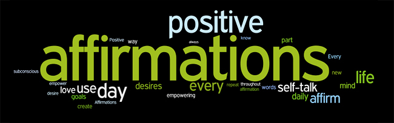

When I think of the times of my life when I've been the most happy or satisfied the values that come to mind growth creativity hope encouragement to do better share more ...Sense of community independence and freedom at the same time since of overcoming. A feeling of nature combined with ration spirituality Arity and maybe resulting in the sense of authority. I like the idea of combining persistence and inspiration these two values represent great growth ability overcoming difficulties and acceptance.

What was the last topic that someone asked for your advice on? Does it relate to your values?
Values can be a powerful way to negate see you type that if you can bring them to mine when you're under threat for this part I could I consider these things how I feel when I think about my values is hopeful and introspective I think that it can help me mediate do you type threat when and if I recognize that I'm feeling it I can turn and recall my values and by reviewing them and remembering those values that I experienced in happier situations can help balance out that sense of threat.
I can think of several mental and physical exercises to do when I'm feeling down including running and walking and stretching and some breathing exercises can help on the physical front as for the mental exercises besides recalling those values and not as sure what I can use mentally to combat had the sense of depression or frustration think that it probably good to except see the down feeling so that it can be pushed through and hopefully will be within those values.